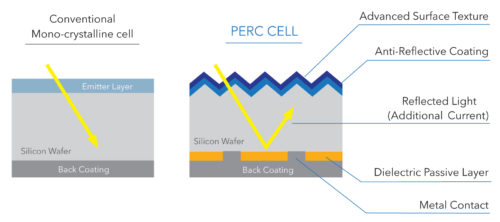

he monocrystalline solar panels are also known as the single crystal panels. They are made from pure silicon
crystal which is sliced into several wafers forming cells.
he polycrystalline solar panels are composed of multiple silicon crystals. They are made from silicon fragments
that are melted and poured into square molds.

Also known as ‘rear cells’, PERC solar panels are manufactured using advanced technology. It is done by adding
a layer on the back of solar cells.
Unlike monocrystalline and polycrystalline solar panels, thin-film solar panels are manufactured using
photovoltaic substances which include Amorphous silicon (a-Si), copper indium gallium selenide (CIGS)
and cadmium telluride (CdTe).